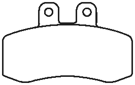
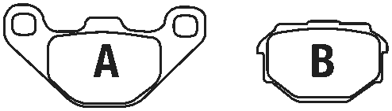

Specifications
General Specifications
Displacement650 cc
Model Years1992–2000
Service Data
Front Brake PadsEBC FA177 · SBS 681HF

FA17787 × 52 × 7.5 mmRear Brake PadsEBC FA173 · SBS 651HF

FA17385.5 × 42.5 × 7.5 mmFork Oil Grade7.5W — 2000
Fork Seal Size45.00 × 58.00 × 11.00 mm (MARZOCCHI, NOK) — 2000
Fork Slide Bushes46.70 × 20.00 × 1.50 mm — 2000
EBC shape badges show the actual pad diagram, code and published dimensions. Diagrams reproduced with written permission from EBC.
Frequently Asked Questions
What is the engine displacement of the Aprilia 650 Pegaso?
The Aprilia 650 Pegaso is listed with a 650 cc engine.
What brake pads does the 650 Pegaso use?
Front: EBC FA177 · SBS 681HF. Rear: EBC FA173 · SBS 651HF. These are pad-shape references; confirm the compound and exact model year before ordering.
What fork oil does the Aprilia 650 Pegaso use?
Listed fork oil data: grade 7.5W — 2000. Confirm the fill procedure in the workshop manual.
What fork seal size does the Aprilia 650 Pegaso use?
The listed fork oil seal is 45.00 × 58.00 × 11.00 mm (MARZOCCHI, NOK) — 2000.
Specifications are manufacturer-claimed and can vary by model year and market. Confirm service limits and torque values against the owner's or workshop manual. Data updated 2026-11-22.